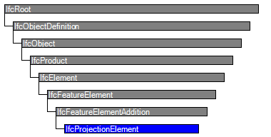

Natural language names
 | Vorsprung / Auskragung |
 | Projection Element |
| Vorsprung / Auskragung |
| Projection Element |
| Item | SPF | XML | Change | Description | IFC2x3 to IFC4 |
|---|---|---|---|---|
| IfcProjectionElement | ||||
| OwnerHistory | MODIFIED | Instantiation changed to OPTIONAL. | ||
| PredefinedType | ADDED | IFC4 Addendum 1 | ||
| IfcProjectionElement | ||||
| HasCoverings | ADDED |
The projection element is a specialization of the general feature element to represent projections applied to building elements. It represents a solid attached to any element that has physical manifestation.
EXAMPLE A wall projection such as a pilaster strip is handled by IfcProjectionElement
NOTE View definitions or implementer agreements may restrict the types of elements to which IfcProjectionElement can be applied.
An IfcProjectionElement has to be linked to a element (all subtypes of IfcElement) by using the IfcRelProjectsElement relationship. Its existence depends on the existence of the master element. The relationship implies a Boolean union operation between the volume of the projection element and the volume of the element.
The IfcProjectionElement shall not participate in the containment relationship, i.e. it is not linked directly to the spatial structure of the project. It has a mandatory ProjectsElements inverse relationship pointing to the IfcElement that is contained in the spatial structure.
HISTORY New entity in IFC2x2.
IFC4 CHANGE The attribute PredefinedType has been added at the end of attribute list.
| # | Attribute | Type | Cardinality | Description | C |
|---|---|---|---|---|---|
| 9 | PredefinedType | IfcProjectionElementTypeEnum | [0:1] | Predefined generic type for a projection element that is specified in an enumeration. There may be a property set given specificly for the predefined types. | X |

| # | Attribute | Type | Cardinality | Description | C |
|---|---|---|---|---|---|
| IfcRoot | |||||
| 1 | GlobalId | IfcGloballyUniqueId | [1:1] | Assignment of a globally unique identifier within the entire software world. | X |
| 2 | OwnerHistory | IfcOwnerHistory | [0:1] |
Assignment of the information about the current ownership of that object, including owning actor, application, local identification and information captured about the recent changes of the object,
NOTE only the last modification in stored - either as addition, deletion or modification. | X |
| 3 | Name | IfcLabel | [0:1] | Optional name for use by the participating software systems or users. For some subtypes of IfcRoot the insertion of the Name attribute may be required. This would be enforced by a where rule. | X |
| 4 | Description | IfcText | [0:1] | Optional description, provided for exchanging informative comments. | X |
| IfcObjectDefinition | |||||
| HasAssignments | IfcRelAssigns @RelatedObjects | S[0:?] | Reference to the relationship objects, that assign (by an association relationship) other subtypes of IfcObject to this object instance. Examples are the association to products, processes, controls, resources or groups. | X | |
| Nests | IfcRelNests @RelatedObjects | S[0:1] | References to the decomposition relationship being a nesting. It determines that this object definition is a part within an ordered whole/part decomposition relationship. An object occurrence or type can only be part of a single decomposition (to allow hierarchical strutures only). | X | |
| IsNestedBy | IfcRelNests @RelatingObject | S[0:?] | References to the decomposition relationship being a nesting. It determines that this object definition is the whole within an ordered whole/part decomposition relationship. An object or object type can be nested by several other objects (occurrences or types). | X | |
| HasContext | IfcRelDeclares @RelatedDefinitions | S[0:1] | References to the context providing context information such as project unit or representation context. It should only be asserted for the uppermost non-spatial object. | X | |
| IsDecomposedBy | IfcRelAggregates @RelatingObject | S[0:?] | References to the decomposition relationship being an aggregation. It determines that this object definition is whole within an unordered whole/part decomposition relationship. An object definitions can be aggregated by several other objects (occurrences or parts). | X | |
| Decomposes | IfcRelAggregates @RelatedObjects | S[0:1] | References to the decomposition relationship being an aggregation. It determines that this object definition is a part within an unordered whole/part decomposition relationship. An object definitions can only be part of a single decomposition (to allow hierarchical strutures only). | X | |
| HasAssociations | IfcRelAssociates @RelatedObjects | S[0:?] | Reference to the relationship objects, that associates external references or other resource definitions to the object.. Examples are the association to library, documentation or classification. | X | |
| IfcObject | |||||
| 5 | ObjectType | IfcLabel | [0:1] |
The type denotes a particular type that indicates the object further. The use has to be established at the level of instantiable subtypes. In particular it holds the user defined type, if the enumeration of the attribute PredefinedType is set to USERDEFINED.
| X |
| IsDeclaredBy | IfcRelDefinesByObject @RelatedObjects | S[0:1] | Link to the relationship object pointing to the declaring object that provides the object definitions for this object occurrence. The declaring object has to be part of an object type decomposition. The associated IfcObject, or its subtypes, contains the specific information (as part of a type, or style, definition), that is common to all reflected instances of the declaring IfcObject, or its subtypes. | X | |
| Declares | IfcRelDefinesByObject @RelatingObject | S[0:?] | Link to the relationship object pointing to the reflected object(s) that receives the object definitions. The reflected object has to be part of an object occurrence decomposition. The associated IfcObject, or its subtypes, provides the specific information (as part of a type, or style, definition), that is common to all reflected instances of the declaring IfcObject, or its subtypes. | X | |
| IsTypedBy | IfcRelDefinesByType @RelatedObjects | S[0:1] | Set of relationships to the object type that provides the type definitions for this object occurrence. The then associated IfcTypeObject, or its subtypes, contains the specific information (or type, or style), that is common to all instances of IfcObject, or its subtypes, referring to the same type. | X | |
| IsDefinedBy | IfcRelDefinesByProperties @RelatedObjects | S[0:?] | Set of relationships to property set definitions attached to this object. Those statically or dynamically defined properties contain alphanumeric information content that further defines the object. | X | |
| IfcProduct | |||||
| 6 | ObjectPlacement | IfcObjectPlacement | [0:1] | Placement of the product in space, the placement can either be absolute (relative to the world coordinate system), relative (relative to the object placement of another product), or constraint (e.g. relative to grid axes). It is determined by the various subtypes of IfcObjectPlacement, which includes the axis placement information to determine the transformation for the object coordinate system. | X |
| 7 | Representation | IfcProductRepresentation | [0:1] | Reference to the representations of the product, being either a representation (IfcProductRepresentation) or as a special case a shape representations (IfcProductDefinitionShape). The product definition shape provides for multiple geometric representations of the shape property of the object within the same object coordinate system, defined by the object placement. | X |
| ReferencedBy | IfcRelAssignsToProduct @RelatingProduct | S[0:?] | Reference to the IfcRelAssignsToProduct relationship, by which other products, processes, controls, resources or actors (as subtypes of IfcObjectDefinition) can be related to this product. | X | |
| IfcElement | |||||
| 8 | Tag | IfcIdentifier | [0:1] | The tag (or label) identifier at the particular instance of a product, e.g. the serial number, or the position number. It is the identifier at the occurrence level. | X |
| FillsVoids | IfcRelFillsElement @RelatedBuildingElement | S[0:1] | Reference to the IfcRelFillsElement Relationship that puts the element as a filling into the opening created within another element. | X | |
| ConnectedTo | IfcRelConnectsElements @RelatingElement | S[0:?] | Reference to the element connection relationship. The relationship then refers to the other element to which this element is connected to. | X | |
| IsInterferedByElements | IfcRelInterferesElements @RelatedElement | S[0:?] | Reference to the interference relationship to indicate the element that is interfered. The relationship, if provided, indicates that this element has an interference with one or many other elements.
NOTE There is no indication of precedence between IsInterferedByElements and InterferesElements. | X | |
| InterferesElements | IfcRelInterferesElements @RelatingElement | S[0:?] | Reference to the interference relationship to indicate the element that interferes. The relationship, if provided, indicates that this element has an interference with one or many other elements.
NOTE There is no indication of precedence between IsInterferedByElements and InterferesElements. | X | |
| HasProjections | IfcRelProjectsElement @RelatingElement | S[0:?] | Projection relationship that adds a feature (using a Boolean union) to the IfcBuildingElement. | X | |
| ReferencedInStructures | IfcRelReferencedInSpatialStructure @RelatedElements | S[0:?] | Reference relationship to the spatial structure element, to which the element is additionally associated. This relationship may not be hierarchical, an element may be referenced by zero, one or many spatial structure elements. | X | |
| HasOpenings | IfcRelVoidsElement @RelatingBuildingElement | S[0:?] | Reference to the IfcRelVoidsElement relationship that creates an opening in an element. An element can incorporate zero-to-many openings. For each opening, that voids the element, a new relationship IfcRelVoidsElement is generated. | X | |
| IsConnectionRealization | IfcRelConnectsWithRealizingElements @RealizingElements | S[0:?] | Reference to the connection relationship with realizing element. The relationship, if provided, assigns this element as the realizing element to the connection, which provides the physical manifestation of the connection relationship. | X | |
| ProvidesBoundaries | IfcRelSpaceBoundary @RelatedBuildingElement | S[0:?] | Reference to space boundaries by virtue of the objectified relationship IfcRelSpaceBoundary. It defines the concept of an element bounding spaces. | X | |
| ConnectedFrom | IfcRelConnectsElements @RelatedElement | S[0:?] | Reference to the element connection relationship. The relationship then refers to the other element that is connected to this element. | X | |
| ContainedInStructure | IfcRelContainedInSpatialStructure @RelatedElements | S[0:1] | Containment relationship to the spatial structure element, to which the element is primarily associated. This containment relationship has to be hierachical, i.e. an element may only be assigned directly to zero or one spatial structure. | X | |
| HasCoverings | IfcRelCoversBldgElements @RelatingBuildingElement | S[0:?] | Reference to IfcCovering by virtue of the objectified relationship IfcRelCoversBldgElement. It defines the concept of an element having coverings associated. | X | |
| IfcFeatureElement | |||||
| IfcFeatureElementAddition | |||||
| ProjectsElements | IfcRelProjectsElement @RelatedFeatureElement | [1:1] | Reference to the IfcRelProjectsElement relationship that uses this IfcFeatureElementAddition to create a volume addition at an element. The IfcFeatureElementAddition can only be used to create a single addition at a single element using Boolean addition operation. | X | |
| IfcProjectionElement | |||||
| 9 | PredefinedType | IfcProjectionElementTypeEnum | [0:1] | Predefined generic type for a projection element that is specified in an enumeration. There may be a property set given specificly for the predefined types. | X |
Property Sets for Objects
The Property Sets for Objects concept applies to this entity as shown in Table 60.
| ||||||||||||||||||||||||||||||||||||||||||||||||||||||||||||||||||||||||||||||||||||||||||||||||||||||||||||||||||||||||||||||||||||||||||||||||||||||||||||||||||||||||||||||
Table 60 — IfcProjectionElement Property Sets for Objects |
Quantity Sets
The Quantity Sets concept applies to this entity as shown in Table 61.
| ||
Table 61 — IfcProjectionElement Quantity Sets |
Product Local Placement
The Product Local Placement concept applies to this entity as shown in Table 62.
| ||||||||||||
Table 62 — IfcProjectionElement Product Local Placement |
The local placement for IfcOpeningRecess is defined in its supertype IfcProduct. It is defined by the IfcLocalPlacement, which defines the local coordinate system that is referenced by all geometric representations.
Body Geometry
The Body Geometry concept applies to this entity as shown in Table 63.
| ||||
Table 63 — IfcProjectionElement Body Geometry |
The geometric representation of IfcProjectionElement is defined using the swept area solid geometry. The following attribute values for the IfcShapeRepresentation holding this geometric representation shall be used:
The following additional constraints apply to the swept solid representation:
As shown in Figure 153, the following interpretation of dimension parameter applies for rectangular projection:
NOTE Rectangles are now defined centric, the placement location has to be set:
- IfcCartesianPoint(XDim/2,YDim/2)
NOTE The local placement directions for the IfcProjectionElement are only given as an example, other directions are valid as well.
 |
Figure 153 — Projection representation |
The general b-rep geometric representation of IfcProjectionElement is defined using the Brep geometry. The Brep representation allows for the representation of complex element shape. The following attribute values for the IfcShapeRepresentation holding this geometric representation shall be used:
| # | Concept | Model View |
|---|---|---|
| IfcRoot | ||
| Software Identity | Common Use Definitions | |
| Revision Control | Common Use Definitions | |
| IfcObject | ||
| Object Occurrence Predefined Type | Common Use Definitions | |
| IfcElement | ||
| Box Geometry | Common Use Definitions | |
| FootPrint Geometry | Common Use Definitions | |
| Body SurfaceOrSolidModel Geometry | Common Use Definitions | |
| Body SurfaceModel Geometry | Common Use Definitions | |
| Body Tessellation Geometry | Common Use Definitions | |
| Body Brep Geometry | Common Use Definitions | |
| Body AdvancedBrep Geometry | Common Use Definitions | |
| Body CSG Geometry | Common Use Definitions | |
| Mapped Geometry | Common Use Definitions | |
| Mesh Geometry | Common Use Definitions | |
| IfcFeatureElement | ||
| Spatial Containment | Common Use Definitions | |
| IfcProjectionElement | ||
| Property Sets for Objects | Common Use Definitions | |
| Quantity Sets | Common Use Definitions | |
| Product Local Placement | Common Use Definitions | |
| Body Geometry | Common Use Definitions | |
<xs:element name="IfcProjectionElement" type="ifc:IfcProjectionElement" substitutionGroup="ifc:IfcFeatureElementAddition" nillable="true"/>
<xs:complexType name="IfcProjectionElement">
<xs:complexContent>
<xs:extension base="ifc:IfcFeatureElementAddition">
<xs:attribute name="PredefinedType" type="ifc:IfcProjectionElementTypeEnum" use="optional"/>
</xs:extension>
</xs:complexContent>
</xs:complexType>
ENTITY IfcProjectionElement
SUBTYPE OF (IfcFeatureElementAddition);
PredefinedType : OPTIONAL IfcProjectionElementTypeEnum;
END_ENTITY;
 Instance diagram
Instance diagram Link to this page
Link to this page